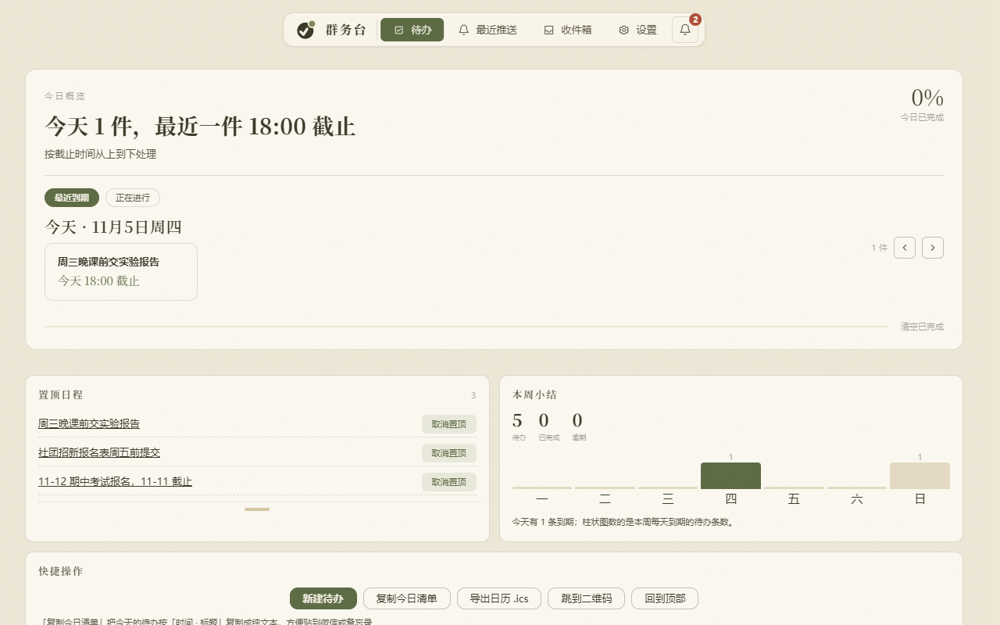
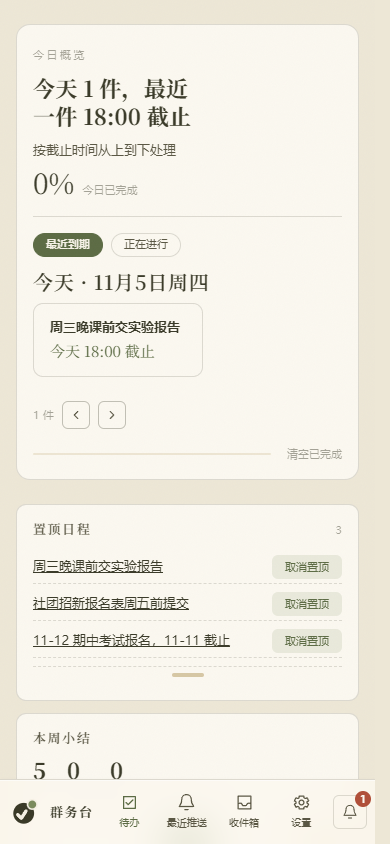

✓群务台
群里的通知，
自动变成待办
四个来源，只读你勾的那几个群；要动手的事进待办台，截止日导进手机日历。数据留在这台电脑上。
- 1钉钉群、微信群、学习通，跟 QQ 群一起收
- 2待办台、月历、公告面板重做了一遍
- 3设置页一键更新：下载、校验 SHA-256、覆盖
- 4Linux 和 macOS 也能跑（源码 + systemd / LaunchAgent）
- 5数据库坏了会自动隔离，每天留一份快照，保 7 天

